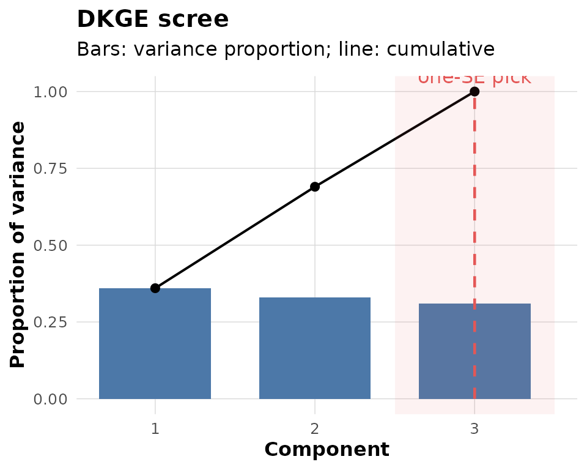
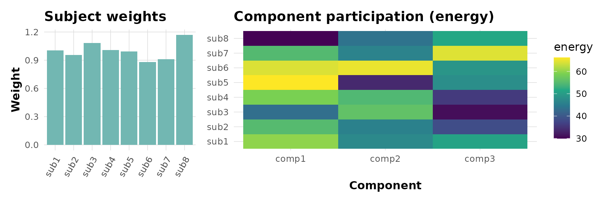
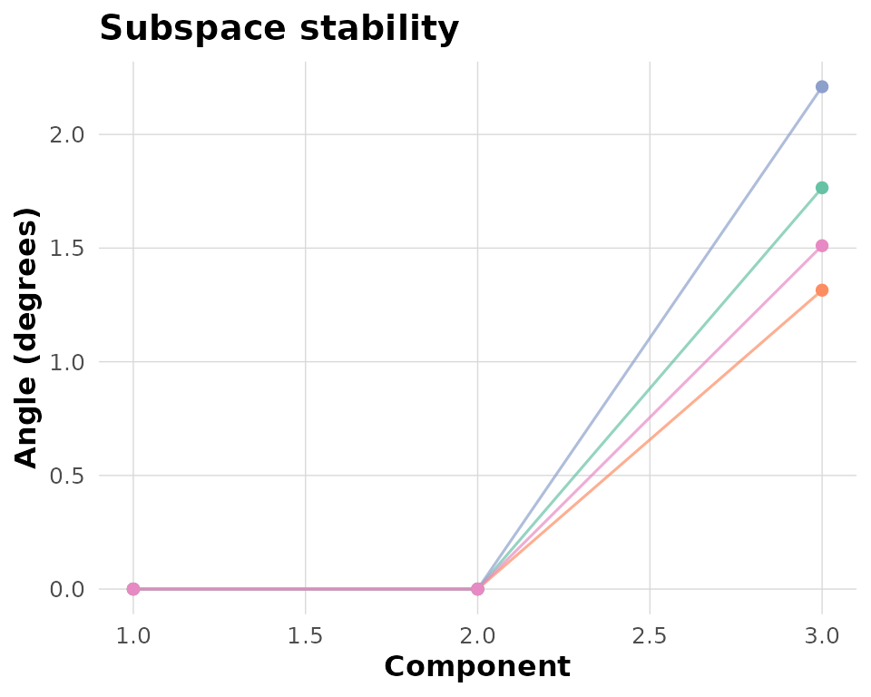
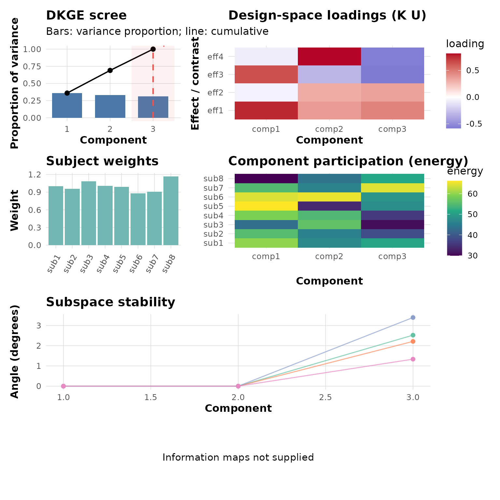

This vignette shows how to inspect one DKGE fit without mistaking a polished figure for statistical evidence. We will plot its eigenspectrum, effect saliences, subject contributions, and subspace sensitivity. Each panel answers a descriptive question; none supplies a p-value or validates the scientific model on its own.
Prerequisites
The information-map plotting functions provide enhanced labeling
capabilities by optionally utilizing the ggrepel package to
annotate top anchors with non-overlapping text placement. When
ggrepel is not available in your environment, the code
gracefully falls back to standard base text labels to ensure
functionality is maintained.
Simulate a toy dataset
We begin by generating a small synthetic dataset manually. Each subject has a diagonal design matrix (one column per effect), and we add modest signal plus noise so the latent components are recoverable but not trivial. Using this construction keeps the vignette self-contained and avoids dependencies on specialised simulators while still providing deterministic ground truth for the plots.
q <- 4L # number of effects
P <- 30L # clusters (voxels) per subject
S <- 8L # subjects
make_subject <- function(id) {
design <- diag(q)
colnames(design) <- paste0('eff', seq_len(q))
signal <- matrix(rnorm(q * P, sd = 0.4), nrow = q)
noise <- matrix(rnorm(q * P, sd = 0.2), nrow = q)
dkge_subject(signal + noise, design = design, id = paste0('sub', id))
}
subjects <- lapply(seq_len(S), make_subject)
K <- diag(q)
fit <- dkge(subjects, K = K, rank = 3, w_method = 'mfa_sigma1')Auxiliary objects
To explain the stability plot’s input contract, we create perturbed versions of the fitted rank-three basis and re-orthonormalise them in the -metric. These are controlled sensitivity perturbations, not cross-validation folds. In an analysis, supply bases actually refitted inside the relevant folds.
fit_U <- fit[['U']]
bases <- replicate(4, {
perturb <- matrix(rnorm(length(fit_U), sd = 0.02), nrow = nrow(fit_U))
dkge_k_orthonormalize(fit_U + perturb, fit[['K']])
}, simplify = FALSE)
base_labels <- paste0('base', seq_along(bases))The optional information-map panels require real outputs from
dkge_info_map_haufe() or dkge_info_map_loco().
We omit them here because random vectors would demonstrate only the
plotting signature while looking like scientific evidence. See
vignette("dkge-classification") for the classifier workflow
that precedes those attribution methods.
Individual plots
Scree
# For illustrative purposes we annotate the scree at component 3.
# In a real analysis you would obtain this optimal rank from dkge_cv_rank_loso()
# or dkge_cv_kernel_rank() cross-validation procedures.
one_se_pick <- 3
dkge_plot_scree(fit, one_se_pick = one_se_pick)
Subject contributions
dkge_plot_subject_contrib() returns two linked panels.
The left panel simply visualises the subject-level weights that were
used while fitting the model (fit$weights). Those weights
depend on the w_method argument passed to
dkge(): in this vignette we deliberately chose
w_method = "none", so each subject keeps unit weight and
the bars are all equal to one. Switching to "mfa_sigma1" or
"energy" would display the corresponding MFA-style or
energy-based weighting actually used in the eigensolve. The heatmap on
the right shows how much norm (“energy”) each subject contributes to the
selected components after those weights have been applied.
contrib <- dkge_plot_subject_contrib(fit, comps = 1:3)
contrib$weights + contrib$energy + patchwork::plot_layout(widths = c(1, 2))
Subspace stability
This diagnostic compares each supplied basis (controlled perturbations here) against a consensus basis by computing principal angles in the metric. Smaller angles mean that a base reproduces the consensus component more closely, so parallel lines near zero indicate a stable subspace, whereas large excursions highlight folds or components that deviate materially.
dkge_plot_subspace_stability(bases, K = fit[['K']], labels = base_labels)
Combine the fit diagnostics
dkge_plot_suite(fit,
one_se_pick = one_se_pick,
comps = 1:3,
bases = bases,
consensus = fit[['U']],
base_labels = base_labels,
top = 5)
dkge_plot_suite() arranges the available panels and
leaves the attribution row empty when Haufe/LOCO results are absent.
Before reporting the dashboard, replace the sensitivity perturbations
with actual refitted bases and interpret each panel next to the
numerical diagnostic that produced it.
Saving the dashboard
dkge_plot_suite(fit,
bases = bases,
consensus = fit[['U']],
base_labels = base_labels,
save_path = "dkge_dashboard.png",
width = 10,
height = 10)Summary
Use the scree plot to describe retained variation, the salience heatmap to name effect directions, the contribution panels to detect subject dominance, and principal angles to summarize refit sensitivity. Save the figure only after the objects behind those panels come from the analysis being reported. Visual coherence improves communication; it does not upgrade descriptive diagnostics into inferential evidence.